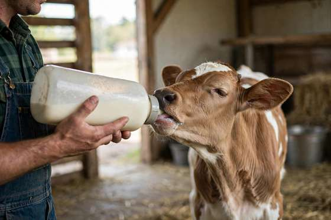
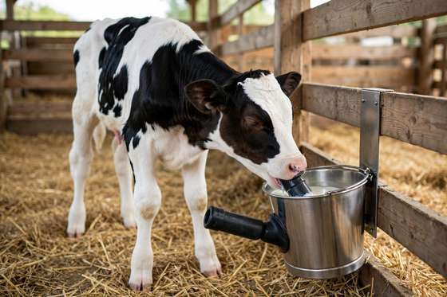
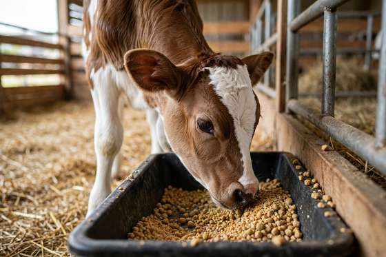
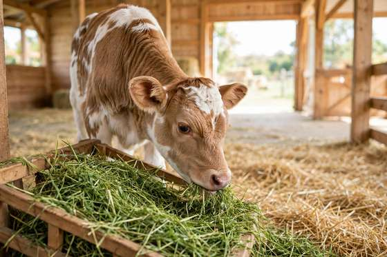
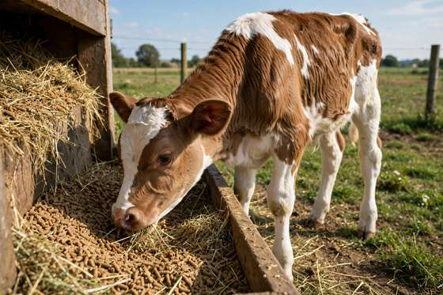
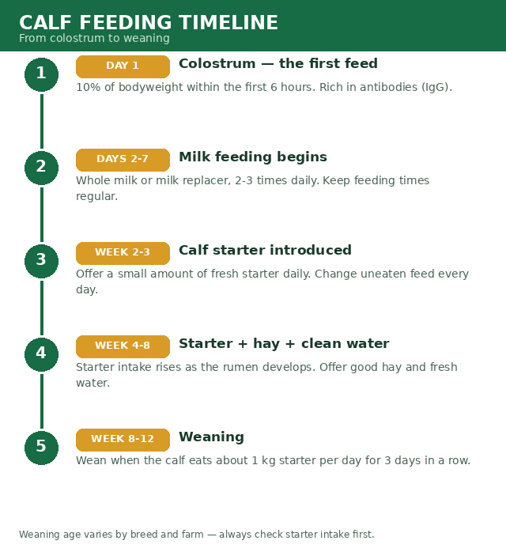
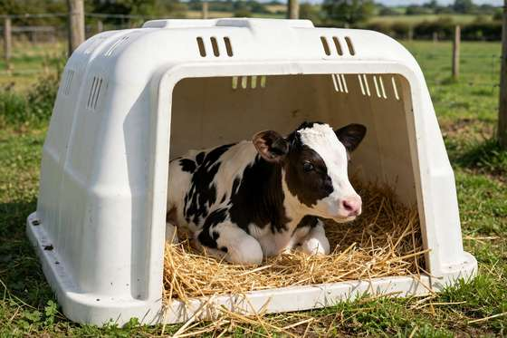
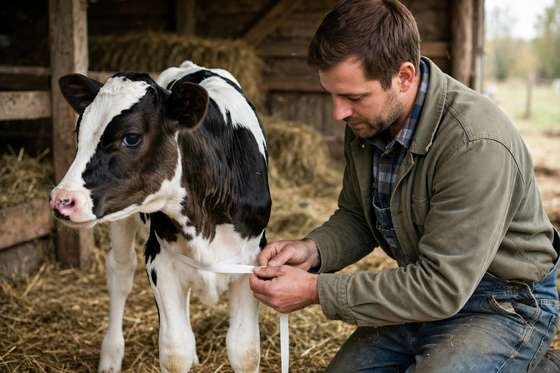
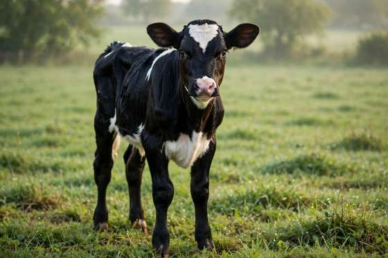
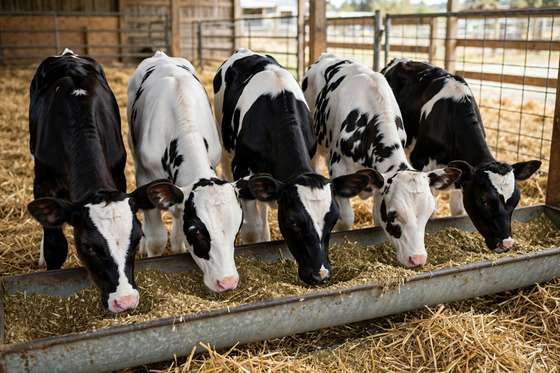

A newborn calf with its mother — the first hours decide its future health
How a calf is fed in its first weeks of life decides whether it grows into a healthy, high-yielding cow or a weak animal that falls sick again and again. Good calf feeding is not expensive — it is mostly about timing, cleanliness and consistency. A calf that receives good colostrum on day one, enough milk, fresh starter feed and clean water will grow fast, resist disease and calve earlier as a heifer.
This guide covers the whole journey from birth to weaning: colostrum, milk feeding, calf starter, hay and water, rumen development, weaning, housing and hygiene, and growth monitoring — with the common mistakes every farmer should avoid.
Colostrum — the First Feed
Colostrum is the thick, yellowish first milk produced by the cow after calving. It is far more than food: it carries antibodies (immunoglobulin G, IgG) that protect the newborn calf against disease. A calf is born with almost no immunity of its own, so colostrum is its only protection in the first weeks of life.
Colostrum — thick, golden first milk, rich in antibodies
1
Give 10% of body weight within the first 6 hours(For a 40 kg calf, about 4 litres. The first feed is best within the first 2 hours after birth)
2
Timing matters more than anything(The calf's gut can absorb antibodies only for a short time after birth — absorption falls rapidly with every passing hour)
3
Check colostrum quality(Good colostrum is thick and creamy. A Brix refractometer reading above 22% indicates good-quality colostrum. First-calf heifers often produce thinner colostrum)
4
Store surplus colostrum(Refrigerate for a few days, or freeze in clean labelled bottles for up to a year. Thaw frozen colostrum in warm water — never boil it or use a microwave, as heat destroys the antibodies)
5
Watch for failure of passive transfer(A calf that received too little, too late, or poor-quality colostrum is far more likely to develop diarrhoea and pneumonia. A veterinarian can check passive transfer with a blood test in the first few days)
Important: if the mother cannot provide colostrum, use frozen colostrum from another healthy cow on the farm. Do not delay — every hour counts. If no colostrum is available at all, contact a veterinarian immediately for advice.
Milk Feeding
After the first day, the calf moves to whole milk or milk replacer. Milk remains the calf's main feed for the first weeks, while starter feed and hay gradually take over as the rumen develops.

Bottle feeding — best for young and weak calves

Bucket with a teat — quick and easy for older calves
Whole Milk vs Milk Replacer
Feed
Advantages
Points to watch
Whole milk
Natural feed, highly digestible, always the right composition
Costs more; can spread diseases such as Johne's disease if from infected cows; never feed milk containing antibiotic residues
Milk replacer
Cheaper, consistent quality, lower disease risk
Must be mixed exactly as the manufacturer directs; choose a replacer with about 20–22% protein and 15–20% fat
Daily Amounts and Frequency
Amount: as a general guide, feed milk equal to about 10% of the calf's body weight per day, divided into the daily feeds. A 40 kg calf therefore receives about 4 litres per day.
Frequency: feed 2 to 3 times a day at the same times every day. Three smaller feeds suit very young or weak calves; two feeds a day suits most farms.
Temperature: feed milk warm, at about body temperature (38–39°C). Cold milk causes digestive upset.
Never overfeed: too much milk in one feed causes nutritional scours (loose dung). It is better to feed a little less, more often.
Bottle vs Bucket
Bottle feeding is best for newborn and weak calves — suckling is natural, and the farmer can see exactly how much the calf drinks.
Bucket feeding (with a teat) is faster and easier once the calf is a few days old and drinks well.
Whichever method you use, wash the bottle or bucket with hot water and soap after every feed. Dirty equipment is one of the main causes of calf diarrhoea.
Feeding Schedule — Birth to Weaning
A simple guide for a healthy dairy calf. Adjust amounts to the calf's size, breed and appetite, and always follow the milk replacer manufacturer's instructions.
Age
Milk
Calf starter
Hay & water
Day 1
Colostrum — 10% of body weight within 6 hours
—
—
Days 2–7
Whole milk or replacer, 2–3 times daily
Offer from day 3–7 (only a few grams at first)
Fresh clean water from day 1
Weeks 2–4
Milk twice daily
Small amount of fresh starter every day
Small amount of good hay; water freely
Weeks 5–8
Milk twice daily
Increase as appetite grows
Hay and water freely available
Weeks 8–12
Reduce gradually, then stop (weaning)
About 1 kg per day before weaning
Hay and water freely available
Calf Starter Feed
Calf starter is a grain-based concentrate feed specially made for young calves. It is the key to rumen development — and therefore the key to successful weaning.

Calf starter — the key to rumen development and successful weaning
When to introduce: offer starter from the first week of life, from about day 3 to day 7. The calf will only nibble at first — this is normal.
Why it matters: fermenting starter grain in the rumen produces volatile fatty acids (mainly butyrate and propionate) that stimulate the growth of rumen papillae — the tiny structures that absorb nutrients. Without starter, the rumen stays underdeveloped.
Quality: choose a palatable starter with about 18–20% crude protein, in coarse, textured form rather than fine powder. Fine dusty feed is less palatable and can cause digestive problems.
Freshness: offer a small amount of fresh starter every day and remove uneaten feed. Stale or mouldy starter puts the calf off eating and can cause illness.
Water alongside: calves eat more starter when clean water is freely available — always provide water next to the starter.
Hay, Water and Rumen Development
A newborn calf is functionally a non-ruminant: milk bypasses the rumen through the oesophageal groove and is digested in the abomasum. The rumen develops gradually as the calf eats starter and hay — and this development decides when weaning is possible.

Good hay and clean water support a healthy developing rumen
Hay: offer small amounts of good-quality, leafy hay from about 2 weeks of age. Hay provides fibre, encourages rumination (cud-chewing) and keeps the rumen healthy. Do not feed large amounts of hay before weaning — it fills the calf up and reduces starter intake.
Water: provide fresh, clean water from day one, freely available at all times. Calves that drink enough water eat more starter and grow faster. Milk is a feed, not a substitute for water.
Rumen development: starter grain drives rumen papillae growth; hay develops rumen size and muscle. Both are needed — but starter is the more important of the two before weaning.
Signs the rumen is working: the calf begins to chew the cud, eats starter eagerly, and produces firm, well-formed dung.
Weaning
Weaning means stopping milk feeding. Done at the right time and in the right way, weaning is a smooth step. Done too early or too suddenly, it causes a growth check, diarrhoea and disease.

A well-weaned calf eats solid feed confidently and keeps growing
When Is the Calf Ready?
A calf is ready for weaning when both of these criteria are met:
1
Weight: about 1.5 times birth weight(A calf born at 40 kg should weigh about 60 kg at weaning)
2
Starter intake: about 1 kg per day for 3 consecutive days(Measure the starter eaten each day — do not guess. The calf must eat this amount on three days in a row)
Most dairy calves reach these criteria at 8 to 12 weeks of age. Never wean by age alone — always check weight and starter intake first.

Calf feeding timeline — from colostrum on day 1 to weaning
Gradual vs Abrupt Weaning
Gradual weaning is best: reduce milk over 7 to 10 days — for example, from two feeds a day to one feed a day, then stop. The calf increases its starter intake to fill the gap.
Abrupt weaning (stopping milk suddenly) causes stress, a drop in growth, and sometimes diarrhoea. Avoid it unless there is a good reason.
After weaning: keep the calf on starter and good hay, with clean water, for at least 2 to 3 weeks. Do not change the feed, the pen and the group all on the same day — one change at a time.
Housing and Hygiene
Good feeding fails in a dirty, damp pen. Housing and hygiene are part of feeding management — most calf diseases start in the pen, not in the feed.

A clean, dry calf hutch — fresh straw, fresh air, no draughts
Individual housing first: keep newborn calves in individual pens or hutches for the first few weeks. This prevents disease spreading between calves and lets the farmer see exactly how much each calf eats and drinks.
Dry bedding: provide deep, dry, clean straw bedding and change it regularly. A simple test: if you kneel on the bedding for 30 seconds and your knees stay dry, the bedding is dry enough.
Ventilation without draughts: calves need fresh air, but not cold wind blowing directly on them. Good ventilation removes ammonia and moisture and reduces pneumonia.
Clean equipment: wash bottles, buckets, teats and troughs after every use. Disinfect feeding equipment regularly.
Isolate sick calves: a calf with diarrhoea or coughing should be moved to a separate pen at once, and fed last, so disease does not spread to healthy calves.
Group housing later: after weaning, calves can be grouped with others of similar age and size. Keep groups small (4 to 6 calves) and give each calf enough trough space.
Growth Targets and Monitoring
What is not measured is not managed. Regular weighing shows whether feeding is working — and warns early when something is wrong.

Measure chest girth every 2 weeks to track growth

A healthy calf — bright, alert, shiny coat, growing well
Daily gain: healthy dairy calves typically gain about 0.6 to 0.8 kg per day before weaning. Gains well below this suggest underfeeding or disease.
Double birth weight: a useful target is to double birth weight by about 8 weeks of age.
Measure every 2 weeks: weigh the calf, or use a weigh tape around the chest girth if no scale is available. Record the result each time.
Watch the calf, not just the numbers: a healthy calf is bright and alert, has a shiny coat, eats eagerly, chews the cud and has firm dung. A dull calf that refuses feed needs attention the same day.
Keep records: note birth weight, colostrum given, daily milk and starter amounts, weights and any illness. Records turn guesswork into management.
Starter intake → about 1 kg per day for 3 days before weaning
Daily gain → about 0.6–0.8 kg per day is a good target
If growth stalls, check feed, water, housing and health — in that order
Common Mistakes in Calf Feeding
Most calf problems come from a few avoidable mistakes. Avoid these, and most calves will thrive.
1
Late colostrum(Waiting until the next morning to feed colostrum wastes the short window when antibodies can be absorbed)
2
Overfeeding milk(Too much milk in one feed causes nutritional scours — feed the right amount, at regular times, at body temperature)
3
Dirty feeding equipment(Unwashed bottles and buckets breed bacteria and cause diarrhoea — wash after every feed)
4
Abrupt weaning(Stopping milk suddenly shocks the calf — reduce milk gradually over 7 to 10 days)
5
No clean water(Calves without water eat less starter and grow slower — water must be available from day one)
6
Starting starter too late(Calves offered starter only at weaning have underdeveloped rumens and cannot cope without milk)
7
Grouping calves too early(Mixing newborn calves with older ones spreads disease — house young calves individually first)
8
Ignoring slow growth(A calf that is not gaining weight is telling you something — check feed, water, housing and health, and ask a veterinarian if it does not improve)

Healthy calves, well fed and well housed — the reward of good management
References
National Research Council (NRC) – Nutrient Requirements of Dairy Cattle.
Merck Veterinary Manual – Management of the Newborn Calf; Calf Nutrition.
FAO – Dairy Production and Calf Rearing Guides.
Penn State Extension – Calf Feeding and Management.
University of Minnesota Extension – Raising Dairy Calves.
Frequently Asked Questions
How much colostrum should a newborn calf receive, and when?
A newborn calf should receive colostrum equal to about 10 percent of its body weight within the first 6 hours of life — for a 40 kg calf, that is about 4 litres. The first feed should be given as soon as possible after birth, ideally within the first 2 hours, because the calf's ability to absorb antibodies (immunoglobulin G, IgG) falls rapidly with every passing hour.
What is failure of passive transfer in calves?
Failure of passive transfer (FPT) occurs when a newborn calf does not absorb enough antibodies from colostrum, either because colostrum was given too late, in too small a quantity, or was of poor quality. Affected calves are far more likely to develop diarrhoea and pneumonia in the first weeks of life. A veterinarian can check passive transfer with a blood test in the first few days.
Whole milk or milk replacer — which is better for calves?
Both can raise healthy calves when used correctly. Whole milk is the natural feed and is highly digestible, but it costs more and can spread diseases such as Johne's disease if it comes from infected cows. A good-quality milk replacer (about 20 to 22 percent protein and 15 to 20 percent fat) is cheaper and more consistent, but it must be mixed exactly as the manufacturer directs. Never switch suddenly between milk and replacer.
When should calf starter feed be introduced?
Calf starter should be offered from the first week of life, from about day 3 to day 7. At first the calf will only nibble a few grams, but early access is important: fermenting starter grain in the rumen produces volatile fatty acids that stimulate rumen development. Offer a small amount of fresh starter every day and remove uneaten feed.
When is a calf ready for weaning?
A calf is ready for weaning when it weighs about one and a half times its birth weight and has eaten about 1 kg of calf starter per day for three consecutive days. Most dairy calves reach this at 8 to 12 weeks of age. Weaning should be gradual — reduce milk over 7 to 10 days rather than stopping suddenly — and the calf should keep eating starter well throughout.
How many times a day should I feed milk to my calf?
Feed milk two to three times a day at the same times each day. Two feeds a day suits most farms; three smaller feeds a day are better for very young or weak calves. Always feed milk warm, at about body temperature (38 to 39 degrees C), and clean the bottle or bucket after every feed.
Why is my calf not growing well?
The most common reasons are too little milk or starter, late or poor-quality colostrum, dirty feeding equipment, internal parasites, or disease such as diarrhoea or pneumonia. Check that the calf is eating enough starter, has clean water, and is housed in a dry, draught-free pen. Weigh or measure the calf every two weeks — if it is not gaining weight, ask a veterinarian to examine it.
بچھڑے کو پہلے دن کولسٹرم (پہلا دودھ) کتنا اور کب دینا چاہیے؟
بچھڑے کو پیدا ہونے کے پہلے 6 گھنٹوں میں اس کے جسمانی وزن کا تقریباً 10 فیصد کولسٹرم دینا چاہیے۔ کولسٹرم میں اینٹی باڈیز ہوتی ہیں جو بچھڑے کو بیماریوں سے بچاتی ہیں۔ پہلا کولسٹرم جتنی جلدی دیا جائے اتنا ہی بہتر ہے، کیونکہ چند گھنٹوں کے بعد بچھڑا اینٹی باڈیز جذب نہیں کر سکتا۔ اگر ماں کا کولسٹرم دستیاب نہ ہو تو منجمد کولسٹرم گرم پانی میں پگھلا کر دیا جا سکتا ہے۔
Key Takeaway
Good calf care today — a healthy, high-yielding cow tomorrow
Calf feeding succeeds on a few simple rules: colostrum equal to 10% of body weight within the first 6 hours, milk at body temperature two to three times a day, fresh starter from the first week, clean water from day one, and weaning only when the calf weighs about 1.5 times its birth weight and eats about 1 kg of starter per day for three days. Keep housing dry, equipment clean, and measure growth every two weeks. Follow current local veterinary authority guidance, and ask a veterinarian about any calf that is not thriving.